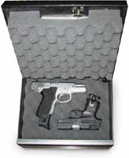

Os pretendentes a ocupar um cargo policial ou militar devem ficar atentos às notícias, e concentrados nos estudos. 2011 é um ano que promete muitos concursos, para a Polícia Civil, a Militar, Polícia Federal e Rodoviária Federal.
O motivo de tanta expectativa é óbvio: poucas corporações da segurança pública têm um efetivo satisfatório. A maioria está com seus quadros esvaziados, e precisam repor seus profissionais.
Algumas dessas corporações, além dos cargos de caráter policiais em si, como Investigadores, Inspetores, Agentes, militares Praças e Oficiais, muitas fazem concurso para agentes administrativos, como é o caso da Polícia Federal e Rodoviária Federal, dentre outras estaduais. Esses cargos administrativos trabalham apenas no serviço interno, não têm porte de arma, e atraem mais aqueles que não desejam ser policiais propriamente, almejam apenas um emprego público.
Enfim, tem pra todo gosto. O que não pode ficar para depois é a preparação. Estudar só depois que sai o Edital do concurso geralmente acaba em um desanimador fracasso. Acelerem os motores, vejam as provas de concursos anteriores e leiam o que dizem os concurseiros sobre cada concurso. Pé na tábua!